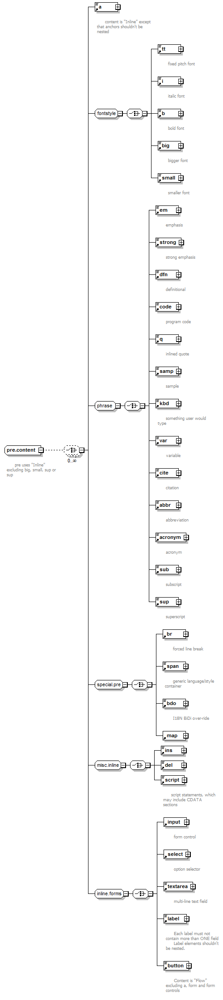

| diagram |  | ||
| namespace | http://www.w3.org/1999/xhtml | ||
| properties |
|
||
| children | a tt i b big small em strong dfn code q samp kbd var cite abbr acronym sub sup br span bdo map ins del script input select textarea label button | ||
| used by |
|
||
| annotation |
|
||
| source | <xs:complexType name="pre.content" mixed="true"> <xs:annotation> <xs:documentation> pre uses "Inline" excluding big, small, sup or sup </xs:documentation> </xs:annotation> <xs:choice minOccurs="0" maxOccurs="unbounded"> <xs:element ref="a"/> <xs:group ref="fontstyle"/> <xs:group ref="phrase"/> <xs:group ref="special.pre"/> <xs:group ref="misc.inline"/> <xs:group ref="inline.forms"/> </xs:choice> </xs:complexType> |